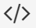

En la actualidad es importante estar preparados para hacer frente a una realidad de avance tecnológico y sacar ventaja de las nuevas tecnologías que emergen. Por ello, en la Facultad de Telemática nos damos a la tarea de egresar profesionistas capacitados para aprovechar las oportunidades que se pueden obtener con la aplicación de los conocimientos apoyados con tecnología. Es por eso, que se dio apertura a dos carreras de licenciatura y una de posgrado, mismas que la sociedad demanda: Ingeniería en Telemática, Ingeniería en Software y Maestría en Tecnologías de Información
El Ingeniero en Telemática
posee competencias genéricas y específicas para diseñar, gestionar y evaluar servicios de redes y telecomunicaciones en organizaciones nacionales e internacionales. Asimismo, cuenta con habilidades para diseñar y desarrollar software de comunicaciones y sistemas distribuidos, operar y realizar el mantenimiento de la infraestructura tecnológica, innovar y adaptar las Tecnologías de Información y Comunicación (TIC) a los procesos productivos de las empresas, implementa estándares y protocolos de seguridad de acuerdo con las normas y lineamientos establecidos y realiza proyectos de desarrollo tecnológico para la solución de problemas de manera flexible y creativa. Actúa con ética profesional y responsabilidad social desempeñándose con liderazgo, espíritu crítico, emprendedor e innovador.

EL Ingeniero en Software
desarrolla proyectos y soluciones tecnológicas a través del empleo de distintos lenguajes, entornos de programación, metodologías de fabricación de software, aplicando elementos básicos de legislación, economía y gestión de recursos humanos, para solventar las necesidades de los usuarios de diversa índole, en concordancia con el bienestar y la seguridad de la sociedad.
La Maestría en Tecnologías de Información es un programa que tiene como objetivo, formar recursos humanos de alto nivel en tecnologías de información, con conocimientos y habilidades para la gestión y el desarrollo de sistemas de información, servicios digitales y proyectos de innovación tecnológica con aplicación en los ámbitos social y productivo, en los sectores público y privado. La formación en el nivel maestría, permitirá tener mejores oportunidades laborales y especialización en su área de interés.
Te invitamos a ser parte de los programas que ofrece la Facultad de Telemática.